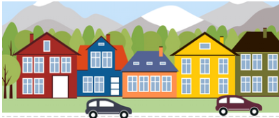
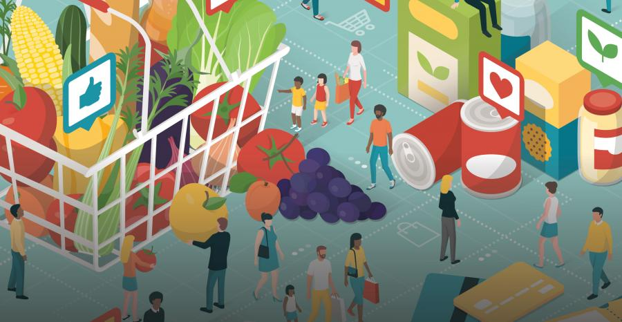

Performed feature extraction using SIFT detector on images.
Used SSD (Sum of Square distance) to match the features and stitched them together.
Optimized the result via RANSAC method.
Understand the Segmentation Dataset and wrote a custom dataset class for the Image-mask dataset.

Performed Data Visualization, Data Cleaning, Feature Engineering, and Exploratory Data Analysis on dataset and Developed a Deep Learning neural network model to predict Real Estate prices using Tensorflow.

Market basket analysis is a data mining technique used by retailers to increase sales by better understanding customer
purchasing patterns. It involves analyzing large data sets, such as purchase history, to reveal product groupings,
as well as products that are likely to be purchased together.
Fashion-MNIST consists of a training set of 60,000 examples and a test set of 10,000 examples.
Each example is a 28x28 grayscale image, associated with a label from 10 classes.
In this project I have declare the Grid Environment to teach my dog (agent) to reach his treat (final goal)
with maximun rewards using SARSA learning approach.